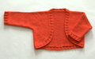

|
||
Premium Patterns Wintry Mix Mitts Love Bytes HawkeyeFree Patterns Kiddie Cadet Summerlin Ruffled Scarf Seamless DS Sock Simply Seamless Pouch Myriads of MushroomsExtras DIY Mitten Blocker Felt Patch Tutorial Yarn Dyeing Tutorial Needle Pouches Knitting Journal |
October 23, 2007 - Posted by Grace SchneblyA Christmas ShrugProject Specs Boy am I glad that this little shrug is finished because it gave me a lot of trouble! I literally knit every part of it twice. The first time I attempted this was about three weeks ago when I finished knitting the shrug then realized that I had totally skipped over the 26 rows which make up the back… I had to frog the entire project and didn’t pick it back up until I got back from vacation last week. With a clear head I thought things would go smoothly, and luckily this time I didn’t skip over any major portions of the pattern. However I had some troubles once I started knitting the ribbing. After I picked up the stitches around the front edge and knit a few rows, some of the picked up stitched looked sloppy so I had to rip it out and redo it. Then after I finally finished the lower back edging and cuffs, I realized I had knit them on size 8 needles instead of 7’s. I was seriously tempted to leave it because my sister would definitely not have noticed it, but it was bugging me so I redid it. It was so frustrating, but I am glad it is finally finished! I had never knit a Debbie Bliss pattern before, and for some reason the instructions were a little difficult for me to follow. All the information is there but the format isn’t what I am used to. It is nice that the entire thing is knit in one piece because after adding the ribbing you only have to seam the sides and under the arms. Once you figure out what’s going on it is a simple pattern, but when I first started I had no clue how it was supposed to look. At any given moment I didn’t really know which part I was knitting, and that’s why I couldn’t catch a major mistake my first time around. I wish the pattern included a sketch to show the piece before seaming. I was really happy with how clear the instructions were on where to pick up the stitches around the front though. It did take a long time to pick them up but it wasn’t difficult. However picking up that many stitches did make it a bit bulky around the edges. I have mixed feelings about using Knit Picks Shine Worsted for this shrug. I chose it because it was inexpensive (I got four skeins for 6 dollars from someone destashing on Ravelry), it’s machine washable, and it is soft. For cotton it’s amazing how soft this yarn really is, but it has it’s flaws too. First of all it sheds a lot. By time I finished the shrug, there was red fuzz all over me and I’m still finding it around. I’m afraid that it is going to pill and fuzz even more with wear. I think I will tell my sister to hand wash it because I recently read a review saying that it does not machine wash well. There are also quite a few flawed spots in the yarn that are unspun and frayed looking which stick out like a sore thumb in the fabric. It also has a really heavy drape and it just feels bulky. If I knit this shrug again I think I would definitely use the suggested Cashmerino Aran or some worsted weight wool. I am giving this shrug to my niece Jojo for Christmas, and I know it will look cute on her although I had a hard time with the pattern and don’t really like the yarn. The color will be perfect for her to wear around the holidays and since it is cotton she won’t get overheated wearing it in Vegas or California. So would I ever make another one? Maybe. |
   Recent ReviewsRecent Posts
 Our Favorites
|
| © 2007 KathrynIvy.com | ||
{kind=link}
{kind=link}